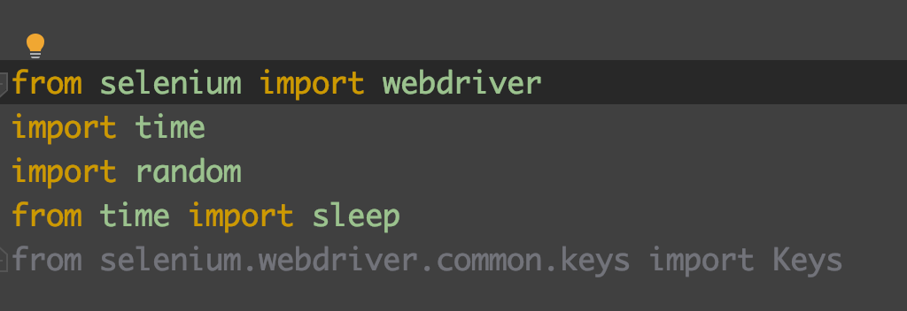

Selenium is a tool which allows you to do automation. It provides instructions to the web-browswer and automate the tasks. To run Selenium on a browser, you will be needing a web driver. This driver allows you to interact with the browser. I used Chrome WebDriver to do my tasks, You can use Firefox or Edge too.
Here are the links to download them :
Chrome WebDriver
Firefox WebDriver
Microsoft Edge
I am still learning . I was thinking of building an interesting project with this. I will update ASAP when I'll complete it! :D